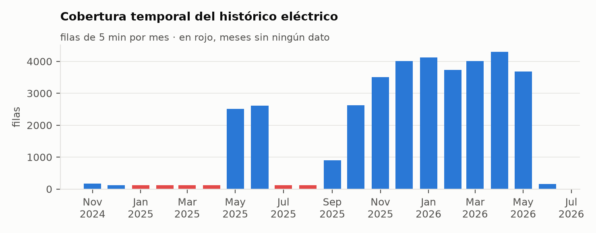
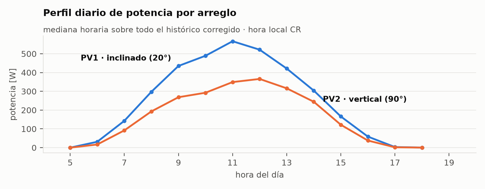
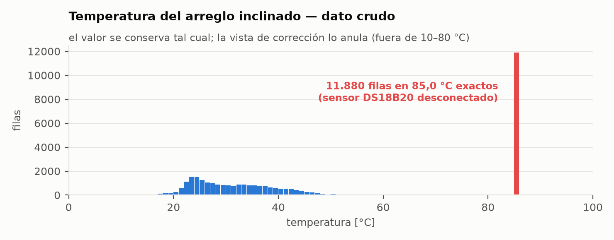
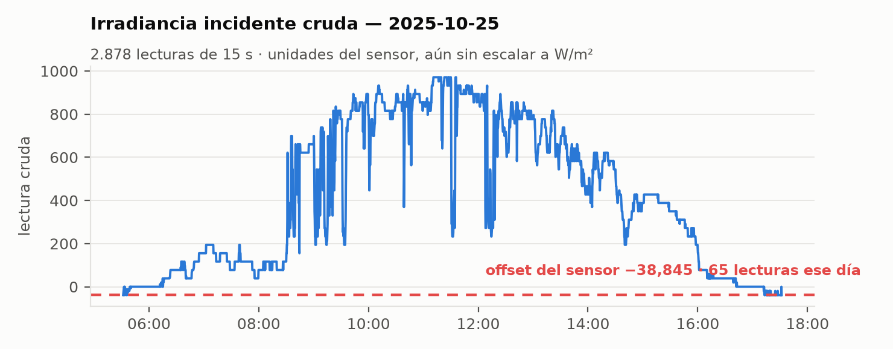
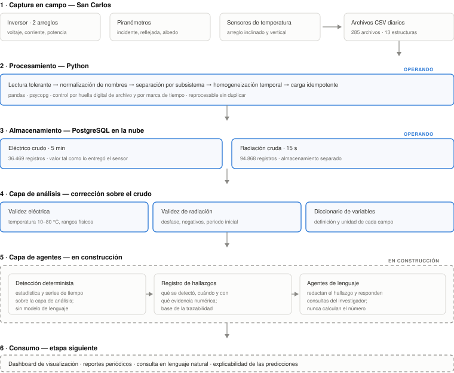

Proyecto AGRIVOLTAIC · Región Huetar Norte
Esta semana se cerró el principal bloqueo técnico del proyecto: las consultas sobre el tratamiento de los datos quedaron respondidas con el documento de decisiones devuelto por el Ing. Leo Cardinale. Con ese criterio ya definido, se ejecutó el procesamiento completo del histórico de monitoreo —diecinueve meses de archivos crudos— hasta dejarlo almacenado y consultable en una base de datos en la nube, y se inició la construcción de la capa de agentes que operará sobre esos datos.
El histórico de monitoreo presenta problemas de calidad documentados en la etapa de análisis exploratorio: nombres de columna inconsistentes entre archivos, sensores saturados, lecturas sin calibrar y ritmos de muestreo cambiantes. Ninguno de esos problemas se podía resolver por decisión propia, porque cada uno implica descartar o alterar mediciones físicas reales. Se elevaron como consulta formal y esta semana llegaron las respuestas.
| Consulta | Criterio recibido |
|---|---|
| Nomenclatura de variables | Aprobada; se permiten abreviaturas siempre que existan descritas en una tabla de definiciones. |
| Temperatura fija en 85 °C | Falla física confirmada (adhesivo del sensor y falsos contactos). Se conserva el valor crudo y se limpia en el análisis. |
| Desfase constante de irradiancia | Comportamiento esperado del equipo; es un asunto de exactitud de calibración y de ruido eléctrico. |
| ¿Corregir o conservar? | Conservar el valor crudo y generar una variable corregida nueva en una etapa de análisis. El crudo puede tener utilidad futura. |
| Filas de sensores mezclados | Recuperar lo que sea recuperable y aceptar huecos donde no lo sea. |
| Ritmo de muestreo | Variables eléctricas cada 5 minutos; radiación cada 15 segundos, en almacenamiento aparte. |
| Límites de validez | Aceptados; temperatura válida entre 10 °C y 80 °C. Se aplican en posprocesamiento, no sobre el dato original. |
| Constante de calibración | No existe ajuste guardado: la denominación del sensor es comercial y no implica dato escalado. |
| Validez del periodo inicial | La medición de irradiancia previa a mediados de 2025 no es válida; el segundo piranómetro entró en operación en mayo de 2026. |
| Geometría del sistema | 1420 Wp por arreglo (4 × 355 Wp, bifaciales). Arreglo 1 inclinado a 20°, orientación 150°; arreglo 2 vertical a 90°, orientación 50°. |
Con el criterio definido se ejecutó el procesamiento del histórico completo. El punto de partida son 285 archivos CSV diarios producidos por el registrador de campo entre el 10 de noviembre de 2024 y el 1 de junio de 2026, que en conjunto presentan trece estructuras de columnas distintas: los mismos conceptos físicos aparecen con nombres cortos, nombres largos con unidades, variantes en minúsculas y errores de digitación heredados del registrador.
El procesamiento se implementó como un proceso repetible de cinco etapas:
| Etapa | Qué hace |
|---|---|
| Lectura tolerante | Abre cada archivo aunque tenga filas con distinto número de columnas, y registra las que no se pueden interpretar en lugar de detener el proceso. |
| Normalización | Reduce las cerca de 70 variantes de encabezado a 26 nombres canónicos, resolviendo acentos, unidades, mayúsculas y errores de digitación. |
| Separación por subsistema | Divide cada archivo en dos flujos independientes: medición eléctrica del inversor y medición de radiación de los piranómetros. |
| Homogeneización temporal | Lleva la parte eléctrica a intervalos de 5 minutos y la de radiación a 15 segundos, conservando en cada registro cuántas muestras se agregaron y cuál era el intervalo original. |
| Carga idempotente | Inserta en la base de datos con control por huella digital del archivo y por marca de tiempo, de modo que reprocesar no duplica ni corrompe nada. |
La condición de idempotencia es la que convierte esto en un proceso permanente y no en una carga de una sola vez: al agregar archivos nuevos, el proceso reconoce lo ya cargado, procesa únicamente lo nuevo y deja la base en un estado consistente. Es el requisito mínimo para que la plataforma pueda alimentarse de forma continua.
El muestreo no fue constante a lo largo del proyecto, lo que confirma en los datos lo indicado en la metodología del equipo. Cada registro almacenado conserva su intervalo de origen:
| Intervalo original | Registros eléctricos | Registros de radiación | Interpretación |
|---|---|---|---|
| 5 minutos o más | 27.249 | 27.230 | Operación actual, conforme a la metodología |
| Entre 1 y 5 minutos | 5.118 | 24.241 | Etapa intermedia del proyecto |
| Entre 20 y 54 segundos | 3.121 | 27.234 | Etapa intermedia del proyecto |
| Menos de 20 segundos | 979 | 16.157 | Etapas de prueba y muestreo fino de radiación |
| Total | 36.469 | 94.868 |
Dos registros eléctricos y seis de radiación quedaron sin intervalo determinable por ser el único dato de su archivo; se conservan igualmente.
Las siguientes figuras se generaron consultando directamente la base de datos ya cargada. No son ilustraciones: son el estado real del histórico al cierre de esta semana.




La diferencia entre el dato almacenado y el dato analizable se ve mejor comparando los valores extremos de cada uno. La columna izquierda es lo que entregó el sensor; la derecha, lo que ve quien consulta la capa de análisis:
| Variable | Máximo en el dato crudo | Máximo tras la corrección | Regla aplicada |
|---|---|---|---|
| Potencia del arreglo 1 | 26.503.162,8 W | 1.602,9 W | Rango físico plausible (0–5.000 W) |
| Temperatura del arreglo 1 | 127,9 °C | 79,8 °C | Validez entre 10 y 80 °C |
| Irradiancia incidente | valores negativos | nunca negativa | Desfase del sensor y periodo inicial no válido |
En números: la regla de temperatura anula 11.949 registros del arreglo inclinado, y la de validez temporal marca 37.825 registros de radiación como no utilizables por corresponder al periodo previo a la corrección de esa medición. Todos siguen existiendo en la base; simplemente no los devuelve la capa de análisis. Conviene señalar también una limitación real del histórico: la potencia total de salida solo está presente en el 54,5 % de los registros, porque no todas las versiones del archivo de campo la incluían.
La base de datos quedó organizada en tres niveles, siguiendo la regla rectora de la sección 2: almacenamiento crudo, capa de corrección y catálogo de definiciones.
| Objeto | Contenido | Registros |
|---|---|---|
monitoreo_sc_electricotabla · 22 columnas |
Medición eléctrica del inversor a 5 minutos, tal cual la entregó el equipo: voltaje, corriente y potencia de cada arreglo, salida en corriente alterna, energía acumulada, temperaturas y código de estado. | 36.469 |
radiacion_sc_15stabla · 12 columnas |
Medición de radiación a 15 segundos, en almacenamiento separado tal como se solicitó: irradiancia incidente y reflejada, albedo y las lecturas del segundo piranómetro. | 94.868 |
v_sc_electrico_corregidocapa de análisis |
Misma información eléctrica con los criterios de validez aplicados: temperatura fuera de 10–80 °C, potencias, voltajes, corrientes y frecuencia fuera de rango físico. | 36.469 |
v_sc_radiacion_corregidacapa de análisis |
Radiación con el desfase del sensor neutralizado, valores negativos acotados y bandera de validez para el periodo previo a la corrección de la medición. | 94.868 |
diccionario_variablescatálogo |
Definición en texto de cada variable, su unidad y a qué arreglo físico corresponde. Responde al criterio de que toda abreviatura esté descrita. | 26 |
_ingest_logcontrol |
Huella digital de cada archivo procesado. Es lo que permite reprocesar sin duplicar y saber exactamente qué se cargó y cuándo. | 285 |
Cada registro almacenado conserva además su trazabilidad de origen: archivo del que proviene, número de muestras agregadas e intervalo de muestreo original. El acceso público a las tablas está deshabilitado; solo los roles de servicio pueden leerlas.
La arquitectura de la plataforma se organiza en capas con una separación estricta de responsabilidades: cada capa recibe un dato en un estado conocido y lo entrega en otro, sin retroceder. El diagrama muestra el estado actual —las tres primeras capas ya operando— y las dos capas en construcción.

Todo el procesamiento y la capa de agentes se están construyendo en Python. La decisión es deliberada y responde a tres razones concretas:
La interfaz de visualización sí se construirá en tecnología web, pero se alimentará de esta base y de estos servicios; la lógica de datos no se duplica.
Detalle de las 20 horas semanales comprometidas, con el resultado verificable asociado a cada bloque de trabajo.
| Actividad | Resultado | Horas |
|---|---|---|
| Revisión de objetivos de ambos proyectos y delimitación del aporte | Alcance acotado y criterio de prioridad | 2,5 |
| Inventario de fuentes físicas y variables del sistema | 3 fuentes documentadas y 26 variables identificadas | 4,5 |
| Diagnóstico de calidad del histórico de campo | 285 archivos revisados; 7 hallazgos cuantificados | 6,0 |
| Definición de usuarios y casos de uso preliminares | 3 perfiles de usuario y 4 casos de uso | 3,0 |
| Preparación y seguimiento de la consulta al equipo | 16 puntos consolidados en un documento de consulta | 4,0 |
| Total Semana 1 | 20,0 |
| Actividad | Resultado | Horas |
|---|---|---|
| Análisis de las respuestas recibidas y actualización del criterio del proyecto | 16 consultas cerradas y registradas como decisiones del proyecto, con su justificación | 3,0 |
| Rediseño del modelo de datos según la regla de dato crudo más capa de análisis | Modelo de dos tablas crudas, dos capas de corrección y un catálogo de definiciones | 4,0 |
| Reimplementación del procesamiento | Separación por subsistema, homogeneización a 5 min y 15 s, y generación automática de la estructura de la base | 5,0 |
| Carga del histórico completo y verificación | 285 archivos procesados; 131.337 registros cargados y contrastados contra los archivos de origen | 3,0 |
| Diccionario de variables y control de acceso a la base | 26 variables documentadas; acceso público deshabilitado | 2,0 |
| Definición de la capa de agentes e inicio de su construcción | Alcance de los dos agentes, arquitectura de la capa y criterio de separación entre cálculo determinista e interpretación | 3,0 |
| Total Semana 2 | 20,0 |
| Acumulado | Horas |
|---|---|
| Semanas 1 y 2 | 40,0 |